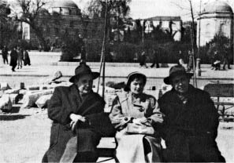

Sevgili Eskimo,
Üçüncü mektubunu dün öğle üzeri aldık. İkinciden sonra arayı epey açtığın için günler sayılıyordu. Nihayet geldi de merak giderildi.
Bugün hava, haftalardan beri ilk defa puslu. Belki yağmur yağar. Sıcaklar yatışır. Hem artık vakti. On gün var dikkatimi çekiyor, günler kısaldı. Akşam tez oluyor. Yalnız henüz sıcak. Selma ile biz işin pek farkında değiliz. Lebibe anne bunalıyor. Bir şikâyet sıcaklar. Gerisi iyi. Gerisi pilâv, zerde. Her şeyin çaresi ... yok. Bazı şeylerin vardır. Benim bulduğum enfes çarelerden biri bir kitabın üzerine kapak gibi kapanmaktır. Tencerenin içi o kadar iyi ki pilâv – zerde.
Orda eve kapanıp kalma, çık gez, kendi başına da olsa kısa gezintiler yap, yürü. Ev insanı melankolik yapar. Bilirsin, pek çok şeylerim gitti evlerde. Erkek miyim, kadın mıyım, belli değil, bilirsin. Pek çok kazançlarım da oldu, evlerde, bilirsin, hayatı küçümsemeyi öğrendim, yalnız kendime saygım arttı, sonra kapak gibi kapanmayı öğrendim, içerde, zerde.
İşte sabah saatleri, Selma daha kalkmadı. Kalkar. Günlük çalışmama başlamadım. Başlarım. Zerde. Güzel kelime de boyuna kalemime dolanıyor. Ben hiç zerde yemedim, güzel bir yiyecek olduğunu da sanmıyorum.
Vallâ ben sana burdan haber maber yazamam hanımcığım. Haber sende. Bizde meselâ üç ay önce hangi olaylar var idiyse yine onlar mevcut. Benim yazmama hacet kalmadan sen onları tasavvur edebilirsin. Yalnız, rica etti de yazıyorum. Gül hanım oğlu için Ephedrin hapları istiyor, öksürük-nefes darlığı içinmiş. Her kapı çalınışında yukarı koşuyor, gelen her kimse selâmını söylüyorum. Dünya. Dünya ve zerde. Gerisi boş. Bir de burun. Her şeyin başı burun. Mendillerin yıkanması hususunda yeni bir metod keşfettim, Vatan gazetesine Ev-Kadın-Moda sayfasına etraflı bir yazı hazırlıyorum. Bu keşfim, çamaşırcılık tarihinde bir devir açacak. Yaşayamadınızsa, belki sebep bir mendil... Evet, şimdi bu sonuca vardım. Belki, değil, biricik sebep mendil. Ben bu mendiller yüzünden böyle oldum. “Mendiller ve Tasavvuf” konusunda Varlık’a uzun bir etüd hazırlamayı da düşünüyorum.
Sen gideli beyaz peynir yok. Birçok şeyler yok. Bulabildiklerimizle idareye çalışıyoruz. N’aparsın.
Sen gideli mitologya sözlüğünü[47] bitirmeye çalışıyorum, sen dönmeden bitirmek istiyorum. İki liralık kitap olmayacak ya, dur bakalım. Zorla büyütemem ki. Ne kadar olursa. Zaten hoşlanarak yaptığım da yok. Bitsin bir an önce, tatil bitmeden bir iki şiir yazmak için bol vaktim olsun.
Tekrar yazıyorum. Sen bizi merak etme, biz her zaman başımızın çaresine bakmayı bilmişizdir. Bir evde sağlam bir kişi oldukça o evden ümit kesilmez, bilirsin. Sen sade sık mektup yaz. Uzun mektuplar olmasa da olur. Kısa, birkaç satır.
Haydi hoşçakal sevgili Eskimo.
B. Necatigil

Oktay Akbal ve Huriye Necatigil ile birlikte, Üsküdar Amerikan Kız Lisesi Edebiyat Matinesi’ne
giderken, Barbaros Meydanı önünde (17 Nisan 1954).